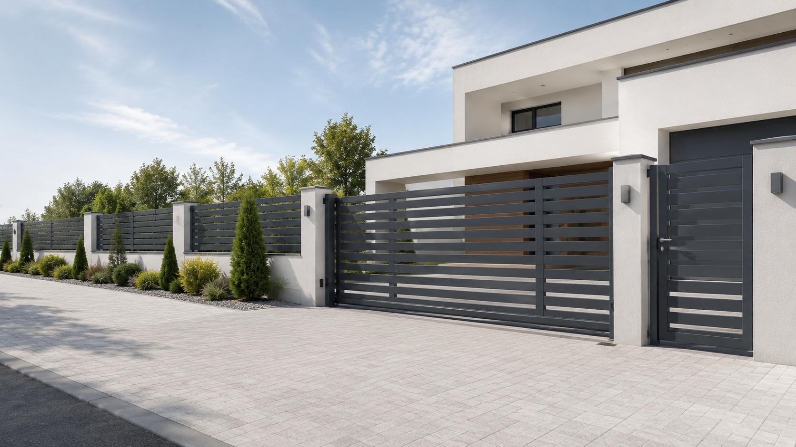
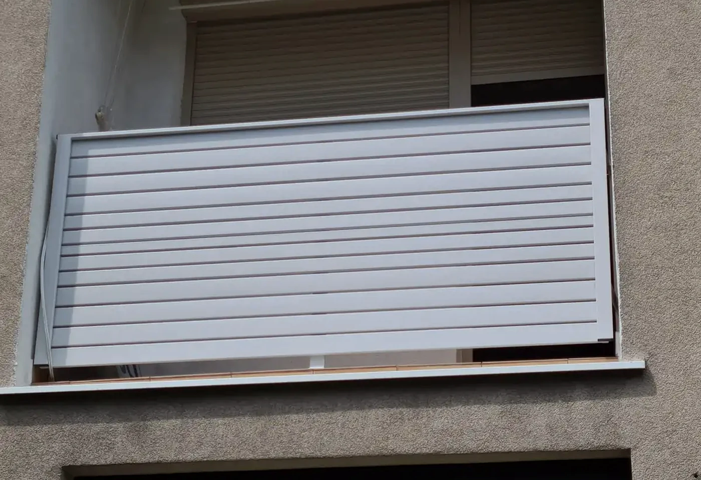

Bramy, furtki i ogrodzenia na wymiar na Śląsku.
Projekt, wykonanie i montaż dopasowane do konkretnej posesji. Obsługujemy Rudę Śląską, Katowice i okoliczne miasta na terenie Śląska.
Werka Bramy
Technicznie dobrze.
Wizualnie spójnie.
Najważniejsze jest to, żeby gotowa brama pasowała do posesji, pracowała płynnie i dobrze wyglądała razem z furtką oraz ogrodzeniem.
Typ bramy i układ są dobierane do miejsca, a nie odwrotnie.
Konstrukcja powstaje pod konkretny front i konkretne wymiary.
Na końcu liczy się prawidłowa, bezpieczna praca całego zestawu.
Oferta
Najczęściej wykonywane realizacje.
Trzy główne zakresy pokazane dużymi zdjęciami. Szczegóły i pełny zakres znajdują się na podstronie oferty.
Automatyka / układ posesji
01Brama przesuwna
Główny wjazd dopasowany do szerokości posesji, miejsca przy ogrodzeniu i sposobu codziennego użytkowania.
Najedź na punkty na wizualizacji, żeby zobaczyć element. Zobacz ofertę
8 opinii • profil firmy Werka Bramy
Klienci najczęściej podkreślają estetykę frontu posesji i dopracowany montaż.
Szybki kontakt, sprawny pomiar i jasne ustalenia od początku realizacji.
Doceniana jest terminowość oraz czyste wykonanie na miejscu po zakończeniu prac.
Sprawdź opinie Google i przejdź bezpośrednio do wizytówki Werka Bramy.
Opinie Google ↗Bramy i ogrodzenia na Śląsku
Ruda Śląska, Katowice i okolice.
Werka Bramy wykonuje bramy przesuwne i dwuskrzydłowe, furtki, ogrodzenia oraz automatykę do bram na wymiar. Pomiar i montaż realizujemy przede wszystkim w Rudzie Śląskiej, Katowicach, Zabrzu, Chorzowie, Gliwicach i Świętochłowicach.
Każda realizacja jest dopasowana do szerokości wjazdu, układu posesji i sposobu codziennego użytkowania. Jeśli nie wiesz, jaki typ bramy sprawdzi się najlepiej, wystarczy wysłać zdjęcie miejsca i miejscowość.
Zapytaj o pomiar i wycenę →Realizacje
Prawdziwe zdjęcia wykonanych prac.
Na stronie głównej zdjęcia są pokazane czyściej, większym formatem i w bardziej uporządkowanym układzie.



Poradniki
Praktycznie o bramach i ogrodzeniach.
Krótko i konkretnie: wybór bramy, automatyka oraz ogrodzenie dopasowane do posesji na Śląsku.
Jak wybrać bramę przesuwną na posesję?
Na co zwrócić uwagę przed pomiarem i montażem.
Czytaj artykuł →Automatyka do bram — co warto wiedzieć?
Dobór napędu, bezpieczeństwo i wygodna obsługa.
Czytaj artykuł →Jak połączyć bramę, furtkę i ogrodzenie?
Spójny front posesji bez przypadkowych elementów.
Czytaj artykuł →Jak to wygląda
Cztery proste etapy.
Kontakt, pomiar, wykonanie i montaż — bez rozbudowanej historii procesu.
Kontakt
Zdjęcie wjazdu, miejscowość i krótka informacja, czego potrzebujesz.
Pomiar
Sprawdzenie miejsca i dobór właściwego sposobu wykonania.
Wykonanie
Produkcja konstrukcji na wymiar oraz przygotowanie elementów.
Montaż
Osadzenie, uruchomienie automatyki i końcowa regulacja.
Bezpłatna wycena
Masz zdjęcie wjazdu? To wystarczy, żeby zacząć.
Wyślij podstawowe informacje przez formularz albo napisz od razu na e-mail.